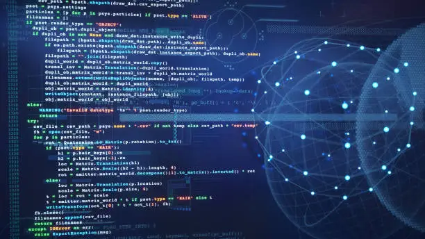

Why Cybersecurity Matters
Cybersecurity protects systems, networks, devices, and data from attacks, unauthorized access, theft, and digital threats. As technology becomes more connected in everyday life, cybersecurity becomes increasingly important for both organizations and individuals.
Businesses, governments, schools, hospitals, banks, military organizations, and everyday users all rely on cybersecurity to protect personal information, financial records, communication systems, and sensitive data from cyber attacks.
Modern technology makes life more convenient, but it also creates new risks. Smartphones, cloud systems, social media, online banking, and connected devices all create opportunities for attackers if systems are not properly secured.
Learning cybersecurity basics helps users better understand how attacks happen, how systems are protected, and how simple security habits can significantly reduce risk.

Threats

Threats are potential dangers to systems and data. Common examples include malware, phishing, ransomware, social engineering, insider threats, and unauthorized access. Understanding threats is one of the first steps in learning how cybersecurity works.
Cyber attacks can target individuals, businesses, schools, and government organizations. Some attackers are motivated by money, while others may focus on stealing information, disrupting services, damaging systems, or gaining access to sensitive data.
Threats continue evolving as technology changes. Attackers constantly look for weaknesses they can exploit, which is why organizations regularly improve their security systems, update software, and train employees on safe online behavior.
Even small mistakes, such as clicking a suspicious link or using a weak password, can create serious security problems. This is why cybersecurity awareness is important for everyone, not just IT professionals.
Vulnerabilities
Vulnerabilities are weaknesses in software, hardware, systems, or security practices that attackers can exploit. These weaknesses may exist because of outdated software, poor configurations, weak passwords, or human error.
Vulnerabilities are dangerous because attackers often search for the easiest point of entry into a system. If a weakness is discovered and not fixed quickly, attackers may be able to steal information, install malware, or disrupt services.
Many organizations regularly scan systems for vulnerabilities and apply security patches to reduce risk. Maintaining strong cybersecurity requires continuous monitoring, updates, and security improvements over time.
- Outdated applications or missing updates
- Weak or reused passwords
- Improper security settings
- Unsecured wireless networks
- Lack of user awareness or training
- Unused accounts with active access permissions
Protection Methods
Basic protection methods include strong passwords, multi-factor authentication, software updates, firewalls, antivirus tools, data backups, encryption, and security awareness training.
Cybersecurity works best when multiple layers of defense are used together. No single tool can completely stop every possible attack, which is why organizations use a combination of technical security tools and safe user practices.
Preventive security measures help reduce the likelihood of attacks, while recovery measures such as backups help organizations recover if a breach occurs.
Software Updates
Security updates patch vulnerabilities and help protect systems from newly discovered threats.
Multi-Factor Authentication
MFA adds another verification step beyond just a password, improving account security.
Data Backups
Backups allow users and organizations to recover important files after ransomware or hardware failures.
Phishing Awareness
Phishing attacks attempt to trick users into revealing sensitive information through fake emails, text messages, phone calls, or websites. Attackers often pretend to be trusted companies, schools, banks, delivery services, or coworkers.
The goal of phishing is usually to steal passwords, financial information, or account access. Some phishing attacks also attempt to install malware onto devices.
Phishing remains one of the most common cyber threats because it targets human behavior instead of only technical systems. Even well-protected organizations can still be vulnerable if users are tricked into revealing sensitive information.
Common Signs of Phishing
- Urgent or threatening language
- Suspicious website links
- Unexpected attachments
- Requests for passwords or personal information
- Spelling mistakes or unusual formatting
- Emails pretending to be from trusted organizations
Password Security
Strong password practices are essential in cybersecurity. Users should create long, unique passwords and avoid reusing them across multiple websites or accounts.
Weak passwords are one of the most common security problems because attackers can use automated tools to guess or crack simple passwords quickly.
Password managers and multi-factor authentication can greatly improve security by helping users create stronger passwords while reducing the chances of stolen credentials being reused successfully.
Use Longer Passwords
Longer passwords are generally more difficult for attackers to crack.
Avoid Reusing Passwords
Reusing passwords across accounts increases risk if one account becomes compromised.
Use Password Managers
Password managers help securely generate and store complex passwords.
Best Security Habits
Good security habits include locking devices, keeping systems updated, using secure Wi-Fi, enabling account alerts, and avoiding downloads from unknown sources.
Cybersecurity is not only about software and technical tools. User behavior also plays a major role in protecting systems and information.
Many cyber attacks succeed because users ignore simple security practices, which is why awareness and consistency are important parts of staying secure online.
- Lock devices when not in use
- Install software updates regularly
- Use secure internet connections
- Enable account alerts when available
- Be cautious with unknown downloads or links
- Back up important files regularly
- Use multi-factor authentication whenever possible